00
°
00
°
00
°
2WD
0
0
km/h
120

↺
الطقس
⟳
تلقائي
☀
صحو
☁
غائم
☂
مطر
≋
غبار
🌪
هبّة
الوقت
⟳
يمشي
🌅
شروق
☀
ظهر
🌇
غروب
☾
ليل
✦
فجر
فرامل
بنزين
--
·
صحو
يبني العالم
0
٪
٠٪
كسّاب
اهداء لصديقي ابوحصه 💕
ابدأ